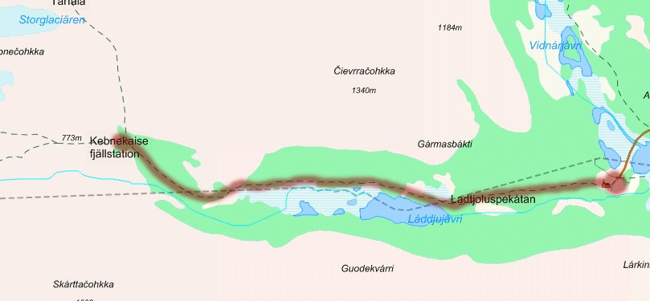
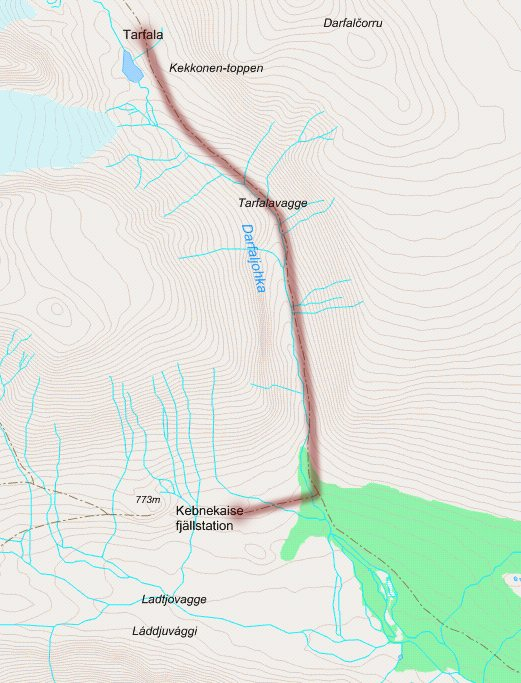
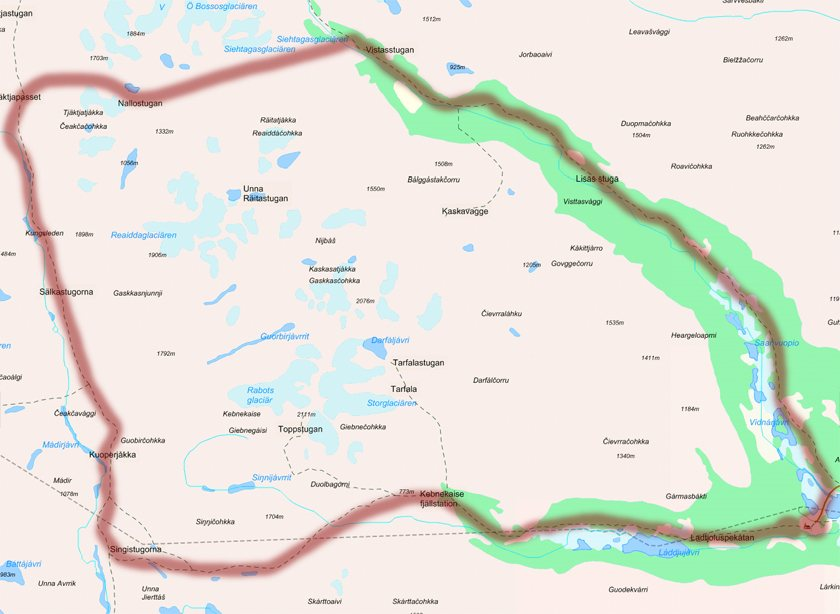
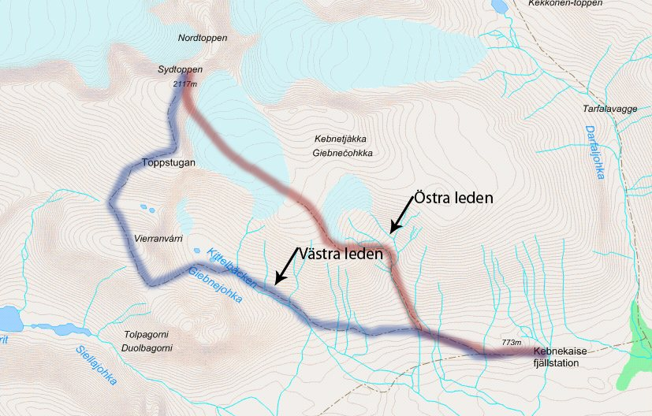

Bestigning av Kebnekaise
Det enklaste och snabbaste sättet att bestiga Kebnekaise är att först ta sig till Kiruna. Med flyg tar det ungefär 1,5 timme från Stockholm. Från Kiruna går buss vidare till Nikkaluokta, och därifrån vandrar man västerut längs en rösad led i cirka 20 km till Kebnekaise fjällstation.
Från fjällstationen finns två huvudleder till toppen. Den västra leden är mindre avancerad men längre: den passerar Kittelbäcken, Vierramvare, Kaffedalen och toppstugorna. Den östra leden är mer krävande och går över Björlingsglaciär med en avslutande bergsklättring. Den kräver kunskap om området och bör inte gås utan vana eller guide.
Två toppar – och ett tronskifte
Kebnekaise har två toppar. Nordtoppen är isfri och ligger på 2 096,8 meter över havet. Sydtoppen är täckt av en glaciär och varierar i höjd beroende på hur mycket snö och is som smälter under sommaren. Sedan 2019 är nordtoppen Sveriges högsta punkt. Vid mätningen i september 2026 var sydtoppen 2 088,3 meter.
Den klassiska vandringen går fortfarande till sydtoppen, men tänk på att toppen är en glaciär. Håll dig till leden, gå inte ut på glaciären utan sällskap och kontrollera aktuella förhållanden och guiderbjudanden hos STF innan du planerar den östra leden.
Uppdaterat 2026: Höjderna förändras från år till år. Läs på hos Tarfala forskningsstation eller STF om du vill ha de senaste mätningarna och aktuell status för lederna.
Vandringsleder
Lederna nedan är relativt vanliga rutter och oftast väl utmärkta, vilket gör dem lätta att följa. Tiderna är ungefärliga och beror på väder, packning och tempo.
Nikkaluokta – Kebnekaise fjällstation
För att komma in i Kebnekaiseområdet går man först mot Kebnekaise fjällstation. Leden från Nikkaluokta är cirka 2 mil och tar ungefär 1–2 dagar. På fjällstationen kan man bo och utgå från olika dagsturer i området.

Kebnekaise fjällstation – Tarfala tur och retur
En av dagsturerna från fjällstationen går till Tarfaladalen, där Stockholms universitet har en forskningsstation. Det är en tur fram och tillbaka som passar bra som vilodag eller acklimatiseringstur.

Runt Kebnekaise via Vistasvagge
Man kan vandra hela vägen eller ta båt en bit upp mot Vistasvagge. Det finns inga andra stugor än Vistasstugorna, som ligger cirka 34 km från Nikkaluokta, så den här rutten kräver tält. Efter Vistas fortsätter man till Nallo, Sälka och Singi och vidare till Kebnekaise fjällstation och tillbaka till Nikkaluokta. Räkna med minst en vecka.

Västra leden
Rutten är utmärkt med rödmarkerade stenar. Man går först via Kittelbäcken och vidare uppför Vierramvare, ner i Kaffedalen och sedan upp mot toppstugorna och sydtoppen. Samma väg tillbaka. Det är en dagstur från fjällstationen.
Östra leden
Östra leden leder också till sydtoppen, men går över glaciärerna i stället. Leden är något kortare och tar därför mindre tid, men den innehåller partier där man behöver klättra och kräver större kunskap om området. Kontrollera alltid aktuellt läge och om guidade turer arrangeras.

Boende
Antingen sover man i tält, vilket betyder tyngre packning och kan vara besvärligt i dåligt väder, eller så bor man i stugor och på fjällstationen. Det finns många stugor spridda över Kebnekaiseområdet, bland annat Singi, Tarfala, Sälka och Vistas. Nackdelen är att man är begränsad till vissa platser och måste hinna till en stuga innan man kan sova. Dessutom kostar det en del beroende på var man övernattar.
Med tält har man friheten att tälta i princip överallt utan att betala för sig, vilket ger en mycket större frihetskänsla. Man kan förstås också kombinera de två boendeformerna.
Det finns mycket att tänka på när man tältar. Välj en plats där du inte riskerar att vakna i en mindre sjö efter en regnskur, och tänk på vindriktningen så att vinden inte får något att ta tag i. Blåsiga platser har mindre mygg men är kallare. Ett bra tips är att lägga tunga stenar längs tältsidorna så att tältet står stadigt.
Fauna
Kungsörn
Kungsörnen förekommer i Kebnekaiseområdet, men är ganska ovanlig. Den vanligaste platsen att se den på är nedre delen av Tarfalavagge. Vi fick aldrig syn på någon under vår vecka.
Dalripa
Daniel och Marcus hade en minst sagt dramatisk första bekantskap med fjällvärldens dalripa. Mitt i natten vaknade Daniel av ljuden utanför tältet och väckte Marcus, som snart också blev förfärad. Trots rädslan lyckades de till slut somna om. Den ”livsfarliga” dalripan livnär sig främst på bärris och videkvistar och finns i Europa, Nordamerika och Ryssland. I Kebnekaiseområdet hittar man den främst i de lågalpina områdena, och på vintern håller den till i skogsområdena.
Däggdjur
De enda däggdjuren vi lyckades få syn på var renar. Det var mäktigt att se de stora djuren beta runt tältplatsen, och Simon tog chansen att springa efter en stor renhane – även om det inte var lätt att hinna med. Brunbjörn, järv, varg och lodjur kan också förekomma i fjällområdena, men de är mycket sällsynta.
Utrustning
Det här är utrustningen vi faktiskt använde under vår vecka. Anpassa efter årstid, väder och om du sover i tält eller stuga.
Tält
Vi använde två 2–3-mannatält. Eftersom tälten var lite större än vad vi behövde för sovplats fick ryggsäckar och annat plats innanför, vilket visade sig vara smart för att hålla grejerna torra vid regn.
Sovsäck
Välj en sovsäck med komforttemperatur runt −5 °C. Det blir lätt kyligt under natten, även i augusti.
Liggunderlag
Vår erfarenhet är att det går att hitta tältplatser där marken är hyfsat mjuk och jämn. Därför klarar man sig ofta med ett tunnare liggunderlag om man vill spara vikt och plats.
Rep och tejp
Tejp och rep är väldigt användbara om något behöver lagas. Ta med mer än du tror att du behöver.
Ryggsäck
Välj en stor ryggsäck med midjespänne som avlastar axlarna. Ett bröstspänne är också ett stort plus. Om ryggsäcken inte räcker till kan man alltid binda fast utrustning utanpå.
Karta och kompass
Om man bara ska bestiga sydtoppen är karta och kompass onödigt eftersom leden är rösad och enkel att följa. Ska man däremot utforska andra områden är det smart att ha med både karta och kompass.
Vattenflaskor
Hellre flera mindre flaskor (max 1 liter) än en stor och tung. Det finns gott om bäckar där man kan fylla på vatten.
Ihopfällbar vattendunk
En vattendunk på 5–10 liter vid tältet är bekväm så att man slipper gå och hämta nytt vatten hela tiden.
Skoskavsplåster
Mycket viktigt om man lätt får skavsår. Apotekets skavsårsplåster med lätt bedövande effekt rekommenderas.
Värktabletter
Tabletter mot magproblem är bra att ha med, eftersom vattnet kan innehålla bakterier om man har otur.
Solglasögon och ficklampa
Solglasögon behövs eftersom man lätt får kramp i ögonen eller ont i huvudet av att kisa hela dagen. En ficklampa är bra vid tältet om man behöver gå upp mitt i natten.
Kläder
Kläderna är minst lika viktiga som utrustningen. Tänk lager på lager och undvik bomull närmast kroppen.
Kängor
Stabil sula gör att man inte får ont i fotsulorna av det steniga underlaget. Gore-Tex- och läderkängor rekommenderas eftersom de är hyfsat vattentäta när man går över bäckar och samtidigt har bra luftcirkulation. Ta gärna med ett par lätta extra skor, till exempel sandaler, att ha vid tältet eller när du korsar vattendrag.
Underställ
Underställ fungerar bäst närmast kroppen och måste transportera bort fukt. Ylleunderställ är mest optimalt eftersom du kan svettas i det flera dagar utan att det börjar lukta.
Tröja och byxor
Ovanpå understället ska du ha kläder som kan ta upp fukten som understället transporterar bort. Bomullskläder fungerar utmärkt. För själva vandringen bör du ha slitstarka byxor som också håller vinden borta.
Strumpor
Ta hand om fötterna. Ett enkelt sätt att slippa skavsår är att ha dubbla par strumpor – då skaver strumporna mot varandra i stället för mot huden. Med skavsårsplåster också klarar du dig långt.
Regn- och vindkläder
Regnkläder är viktiga eftersom det kan ta lång tid att torka blöta kläder. Vindkläder är också nödvändiga eftersom det blåser mycket på vissa platser och regnkläder inte andas särskilt bra.
Mössa och vantar
Mössa behövs under vandringen eftersom man lätt får ont i huvudet när det blåser kallt. Vantar är bra om det är kallt eller om man lätt får torra händer och sår på nagelbanden.
Mat
Maten ska vara lätt att laga, ta lite plats och ge tillräckligt med energi. Vi levde mest på frystorkat, gröt, mackor och soppa – och unnade oss pizza när vi kom tillbaka till Kiruna.
Frystorkad mat
Frystorkad mat är bekväm, går snabbt att laga och tar väldigt lite plats. Vid fjällstationen kan man köpa frystorkad mat om man inte vill bära med sig allt hemifrån, men räkna med att det kostar lite mer där.
Gas- eller spritkök
Ett gaskök väger mindre än ett spritkök och är lättare att använda. På Järnia i Kiruna kan man köpa gasbehållare, och det finns även på fjällstationen.
Stormtändare
På grund av vindförhållandena är en stormtändare bra att ha. Stormtändstickor fungerar också.
Packlista
Listan vi utgick från inför en vecka i tält. Bocka av och anpassa efter väder, årstid och boendeform.
- Tält
- Sovsäck
- Liggunderlag
- Rep och tejp
- Ryggsäck
- Kängor
- Extra skor / sandaler
- Regnkläder
- Vindkläder
- Mössa
- Vantar
- Karta och kompass
- Vattenflaskor
- Frystorkad mat
- Gas- eller spritkök
- Stormtändare
- Ficklampa
- Kastruller
- Underställ
- Ombyteskläder
- Disksvamp
- Ihopfällbar vattendunk
- Skoskavsplåster
- Första hjälpen-låda
- Värktabletter
- Solglasögon
- Toapapper